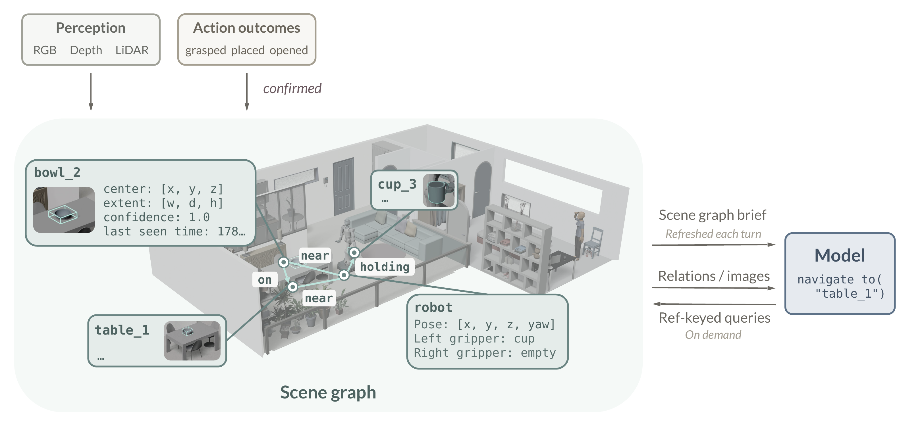
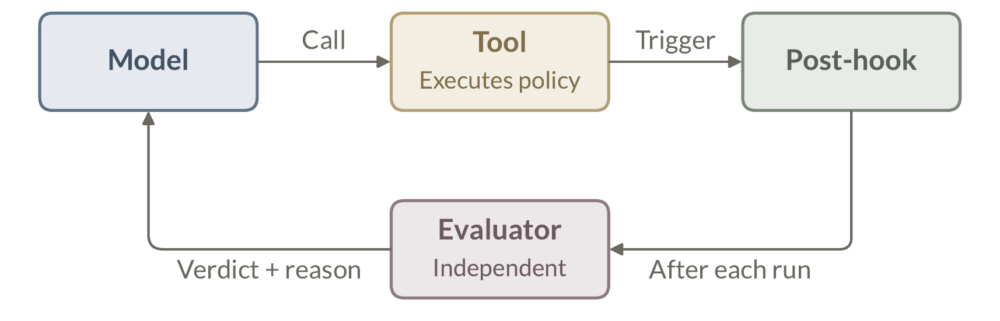

The previous section carries the harness across layer by layer. Every layer has a digital counterpart to start from, and the work is adaptation. This section builds what has no counterpart. Gaps 1 and 2 (§1) name the two absences that break the loop itself: the physical world is neither readable nor verifiable by construction, so the infrastructure a coding agent inherits for free must here be built. The scene graph restores readability, giving the loop a world it can reference (§4.1). The evaluator restores verifiability, approximating the exit codes the world does not issue (§4.2). A third absence has no named gap because coding agents never meet it. They have no body. An embodied agent does, and what it can sense, reach, and do depends on which body it runs on. The Embodiment Profile describes the body and the boundaries of its capabilities (§4.3).
We restore world readability through two linked layers (Figure 6). An object-centric scene graph maintains a persistent, symbolic world state across turns. A decision-facing interface carries that state into the model's context: a compact scene graph brief by default, with queries keyed by object ref when more detail is needed. §4.1.1 defines the world-state representation and its update process. §4.1.2 explains how the model reads that state, confirms an object ref, and carries the ref into tool calls.
A coding agent inherits a named and searchable environment. It can search for a symbol, read the path that comes back, and hand the same path to its next tool call. A physical agent starts with none of this. Its visual and depth observations describe one view at one moment, robot state and tool feedback arrive on separate channels, and none of these signals organizes the world into entities the loop can reference again. Yet to continue a task, the loop must know which entity it is pursuing, where that entity was last observed, and how much to trust that evidence. We therefore turn fleeting signals into persistent symbols. An object-centric scene graph ties a stable ref to each object's coarse position and freshness, turn after turn [22, 23, 24].
Recorded object node{
"id": 2,
"label": "cup",
"center": [3.91, -0.18, 1.08],
"extent": [0.099, 0.133, 0.096],
"confidence": 1.0,
"last_seen_time":
1778162862.957,
"image_path": ".../2.jpg"
}
derived ref: cup_2
Graph structure. The scene graph organizes world
state into nodes, edges, and graph metadata, following 3D scene-graph
representations that bind semantic entities to spatial structure [25].
An object node carries a ref such as cup_2, which the harness
derives from the node's label and id; behind the ref,
the node stores a coarse 3D bounding box, confidence, freshness, and a link to
visual evidence. A container (e.g. a cabinet or a drawer) keeps its state and
tracked contents on the same node, and a robot node tracks pose and holding
state. Edges encode on, inside, holding,
and near relations among object, container, and robot nodes; a
near edge, for example, carries the measured distance between its
endpoints. Graph metadata records provenance, coordinate frame, and update
time. Listing 8 shows one recorded object node.
Graph maintenance. A persistent picture must be kept true, and two kinds of change reach it: what the robot sees, and what the robot does. The perception backend supplies observation-derived state from visual and depth evidence, refreshing object nodes, coarse positions, confidence, freshness, and spatial relations, echoing dynamic scene-graph construction and structured representations used in real-world ObjectNav systems [26, 27, 28]. Execution-derived updates record what physical actions change, such as grasping an object or opening a container; action-conditioned scene graphs likewise use interactions to reveal previously hidden structure [29]. In our harness, this input is gated. After a tool finishes, the evaluator checks its post-condition (§4.2), and only a confirmed outcome may edit the graph. A confirmed pickup, for example, marks the robot as holding the object and removes it from where it lay; a confirmed cabinet opening records that container as open. The harness resolves both inputs against object refs and merges them into a single graph. Together they keep the scene graph an up-to-date picture of the world.

Scene graph brief:
objects=10;
stamp=1778162862.957
Robot: pose=[0,0,0,0],
gripper empty
Observed objects:
- cup_2 at (3.91,-0.18,1.08);
conf=1
- laptop_5 at (5.21,1.18,1.29);
conf=1
...Scene graph brief. The full graph is too much to hand the model every turn. The context window is a finite, attention-limited resource (§3.2), and most graph detail is irrelevant to the next decision. The harness therefore renders a scene graph brief into the refreshed context, with frequently needed information present by default and the rest fetched on demand. Nearly every decision must know which objects the world offers, where each one lies, and how far to trust that evidence, so the brief lists every object ref with its coarse position, confidence, and freshness. The robot's own pose and holding state condition every action choice, and tracked container contents keep known but unseen objects addressable, so both enter the brief. Detail that only particular decisions touch, such as an object's extent, its relation edges, and its stored images, stays in the graph and is retrievable by ref. The brief is compact because it selects fields rather than pruning nodes; the boundary need not be exact, since anything omitted costs one extra query, not a failure. The harness regenerates the brief before each call while preserving the graph across calls, so the model reads a current global picture without reconstructing world state from accumulated messages [13]. Listing 9 shows an abridged brief.
Ref-keyed queries. What the brief omits, the model
fetches itself. A small set of query tools reads the full graph on demand,
keyed by ref, so every answer attaches to an entity the graph already names
rather than introducing a new one. get_object_relations returns
the typed relations of a ref, and get_image returns the visual
evidence stored on its node. For example, the graph names objects at the class
level, so when the user asks for “the red cup” and the brief lists
three cups, no ref settles the instruction by name; the model calls
get_image on the candidates and reads the color from their stored
views, evidence it needs for this one decision and not as standing context. A
spatial cue such as “the cup by the desk” resolves similarly
through get_object_relations. The design ends at the tools; what
follows is the model's own behavior. It chooses which query to issue and when,
and asks through query_user when no gathered evidence settles what
the user means. It treats an empty lookup as absence of evidence, not absence
of the object, and obtains a fresh observation or inspects a likely container
before concluding that the object is not there. Composing these moves, the
model resolves a vague phrase into a symbolic instance and hands its ref to the
next action tool, navigate_to(target="cup_2"); the binding keeps
naming the same entity through evaluation and retry until new evidence breaks
it.
A confirmed ref settles which entity the robot pursues and where it approaches; it does not promise that manipulation is ready from the current pose. That judgment falls to later evidence. Near the object, a fresh observation grounds visibility and alignment, and after each action the evaluator rules on the outcome (§4.2). The scene graph supplies identity and coarse location, nothing more. It makes the world readable and addressable without becoming a readiness or success oracle.
In the paradigm of coding agents, the environment itself tells the agent how its last action went: commands return exit codes, tests fail with stack traces, and the agent debugs against these signals [30]. The physical world provides no such infrastructure. A robot that has just attempted a grasp receives no signal telling it whether the task is still in progress, has succeeded, or has failed, let alone why: a slipped grip and a collision both go unreported. Supplying this missing verdict is neither optional nor easy. The reliability analysis in §2 shows that evaluator accuracy α directly bounds the end-to-end task success rate: a harness is only as reliable as its judge. The difficulty also inverts across worlds. In coding agents a single step judges itself, and the hard questions begin only at the level of whole trajectories; in the physical world, judging even one action is already the open problem.
Thea therefore makes evaluation an explicit module of the harness. An evaluator judges each action's outcome and returns the verdict with a structured failure reason, the exit code and the stack trace that the world never provides. Designing it comes down to three questions, answered in turn below and illustrated in Figure 7: when to judge, since not even the end of an action announces itself; who judges, since a self-report of success cannot be the verdict; and what the verdict carries, since a bare boolean gives replanning nothing to work with.

Timing. When to judge depends on the family of the
policy behind the tool. For end-to-end models [10, 31], no signal marks
completion, so the evaluator judges the run online, at each action-segment
boundary: process means the run should continue,
success that the post-condition has been satisfied, and
failure that execution should stop, with a step budget as the
backstop. For Coding-as-Policy [32] approaches, the generated program
terminates on its own and reports its progress through control flow, so the
same contract degenerates to the two terminal states.
Independence. Who judges is settled structurally. The harness places the evaluator as an independent component after tool execution, triggered by a post-hook rather than by the model's explicit invocation. Its inputs are restricted to two things: the current observation, and the per-tool post-condition (what the world should look like after a successful call) [33]. It reads neither the model's reasoning nor its self-report, the reasoning-blind discipline Anthropic applies to its own action classifier [34]. A model grading its own work is an unreliable judge [35], and a biased one [36].
{
"status": "failure",
"evidence": [
"the bottle remains
on the table",
"the gripper closed
without lifting it"
],
"failure_reason":
"the robot stopped
too far from the bottle
to grasp it"
}
The verdict. What the verdict carries determines
what recovery can follow. A bare status already closes the loop, but only
blindly: the agent can retry, yet cannot adapt. For example, if a grasping
action fails, the agent needs to know whether the failure was caused by failing
to reach the target, missing the object, object occlusion, or dropping the
object after grasping; each cause calls for a different recovery. Beyond the
status, the evaluator therefore returns evidence and the failure reason;
Listing 10 shows the contract returned for one such failed grasp. The division
is deliberate [37, 38]. The evaluator only judges the outcome and
explains the failure, and what to do next is left to the agent, which holds the
full context the evaluator never sees. Downstream, a success gates
the scene graph update after the action
(§4.1), and the failure reasons feed the tool
experience consolidated at task end (§3.5).
A coding agent never needs to be told about a body. It works through the shell and the file system, an interface that is the same everywhere and, when in doubt, can simply be asked. A robot's body takes no such questions, and nothing about it is standard. Morphology, sensing geometry, mobility, and reach vary across platforms, and jointly determine what evidence is available, how spatial measurements should be interpreted, and which actions are feasible. The Embodiment Profile states these body-specific facts explicitly, as a compact, replaceable document. At deployment, the harness loads the profile selected for the active embodiment and retains it throughout the session. Replacing the profile changes the body-specific context as a unit while task instructions retain the same form. This is what makes one harness portable across embodiments. Localizing embodiment knowledge in one document keeps it consistent across decisions and makes adaptation easier to inspect, maintain, and validate.
The Embodiment Profile organizes stable body-specific information into three complementary sections, summarized in Table 2.
| Profile item | Stored information | Decision support |
|---|---|---|
| Operational Envelope | ||
| Base Footprint | Radius or dimensions of the body's ground footprint. | Relates available space to the area occupied by the body. |
| Base Mobility | Supported base translations and rotations. | Rules out motion commands that the base cannot execute. |
| Reachable Workspace | End-effector reach and operating height. | Determines whether an object or location is physically reachable. |
| Perception Configuration | ||
| Sensor Modalities | Types of evidence available to the model. | Identifies whether a decision can use images or distance evidence. |
| Model-Visible Views | Named mounted camera views exposed to the model. | Identifies the views that the model can request. |
| Base-Relative Positions | ||
| Camera Positions | Fixed camera positions relative to the base center. | Situates visual evidence on the active body. |
| Initial Gripper Positions | Gripper positions in the initial posture relative to the base center. | Situates the manipulation interfaces on the active body. |
Operational Envelope records the body's stable limits for motion and manipulation. The base is whatever carries the body, a wheeled chassis or a humanoid's legs, and its entries record what the base can do, not how it does it. Perception Configuration describes the evidence made available to the model, such as color images and clearance measurements. Base-Relative Positions records where sensing and manipulation interfaces are located relative to the base center. Taken together, Operational Envelope constrains feasible actions, Perception Configuration identifies the evidence available for a decision, and Base-Relative Positions situates that evidence and the manipulation interfaces on the active body.